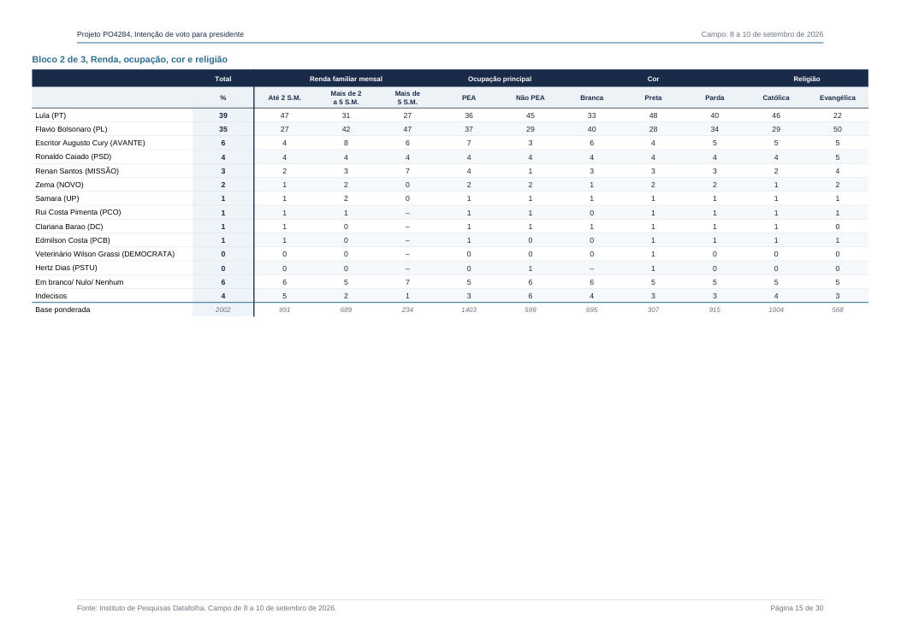
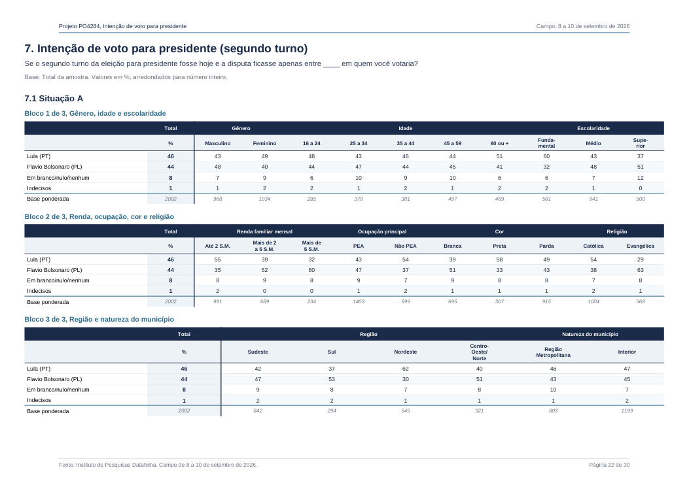

01 / AUDITORIA
O que muda quando
a renda pesa diferente.
A faixa de até dois salários mínimos representa 51,78% das bases com renda declarada. Na referência principal da PNAD, são 35,19%. Dentro dessa faixa, Lula tem 55% e Flávio, 35% no segundo turno.
O PDF completo resolve a lacuna da divulgação preliminar: as bases ponderadas são 991, 689 e 234, nas três faixas de renda. As mesmas contagens aparecem nas tabelas dos dois turnos. A soma é 1.914; outras 88 entrevistas ponderadas não estão representadas nesses recortes. A conta usa as bases da intenção de voto. PDF p. 42 PDF p. 49
| Faixa familiar mensal | Base ponderada | Lula 1º | Flávio 1º | Lula 2º | Flávio 2º |
|---|---|---|---|---|---|
| Até 2 SM / R$ 3.242 | 991 | 47% | 27% | 55% | 35% |
| 2 a 5 SM / R$ 3.242–8.105 | 689 | 31% | 42% | 39% | 52% |
| Mais de 5 SM / acima de R$ 8.105 | 234 | 27% | 47% | 32% | 60% |
| Referência | Lula 1º | Flávio 1º | Lula 2º | Flávio 2º |
|---|---|---|---|---|
| Publicado | 39,00% | 35,00% | 46,00% | 44,00% |
| PNAD · pessoas 16+ · efetivo | 35,81% | 38,16% | 42,41% | 47,89% |
| PNAD · pessoas 16+ · habitual | 35,79% | 38,16% | 42,42% | 47,88% |
| PNAD · domicílios · efetivo | 37,17% | 36,83% | 43,89% | 46,29% |
O segundo turno muda de sinal nas três referências. No primeiro, a referência por domicílios ainda deixa Lula 0,34 ponto acima de Flávio. Esse contraponto delimita o resultado: a inversão do primeiro turno depende da unidade de ponderação; a do segundo aparece nos três exercícios.
A âncora é sempre o placar nacional publicado. Somamos apenas a variação provocada pela troca dos pesos de renda. Isso preserva o resíduo de arredondamento e evita vender a média de três recortes como reprodução exata da estimativa conjunta do instituto. A referência é a mesma base anual 2025 usada no agregador, expressa em preços de abril de 2026; os cortes nominais do questionário são convertidos por IPCA. Como o IPCA disponível não alcança todo o período de campo, o último índice disponível é usado, conforme a regra comum do agregador.
Conferência independente da extração
As tabelas foram extraídas do texto nativo do anexo, com validação do número de colunas, rótulos e bases. Sexo e região são partições fechadas de 2.002 casos e recompõem os dois finalistas perto dos totais publicados.
| Tabela / dimensão | Candidato | Recomposto | Publicado | Base |
|---|---|---|---|---|
| 1º turno / sexo | Lula (PT) | 38,58% | 39% | 2002 |
| 1º turno / sexo | Flavio Bolsonaro (PL) | 34,84% | 35% | 2002 |
| 1º turno / regiao | Lula (PT) | 38,54% | 39% | 2002 |
| 1º turno / regiao | Flavio Bolsonaro (PL) | 34,65% | 35% | 2002 |
| 2º turno / sexo | Lula (PT) | 46,10% | 46% | 2002 |
| 2º turno / sexo | Flavio Bolsonaro (PL) | 43,87% | 44% | 2002 |
| 2º turno / regiao | Lula (PT) | 46,39% | 46% | 2002 |
| 2º turno / regiao | Flavio Bolsonaro (PL) | 43,89% | 44% | 2002 |
02 / AUDITORIA
O segundo turno
continua no mesmo lugar.
Entre 3 e 11 de setembro, Lula segue em 46% e Flávio em 44%. O intervalo entre os candidatos também quase não se altera depois da padronização por renda.
| Divulgação | Publicado · Lula × Flávio | PNAD · Lula × Flávio | Diferença PNAD · Lula − Flávio |
|---|---|---|---|
| 22/05 | 47 × 43 | 43,67 × 46,53 | -2,86 pp |
| 19/06 | 47 × 43 | 45,10 × 45,34 | -0,24 pp |
| 24/07 | 48 × 43 | 45,42 × 45,49 | -0,07 pp |
| 21/08 | 47 × 43 | 44,24 × 46,08 | -1,84 pp |
| 03/09 | 46 × 44 | 42,24 × 47,75 | -5,51 pp |
| 11/09 | 46 × 44 | 42,41 × 47,89 | -5,47 pp |
O primeiro turno se aproxima; o segundo já incorporava essa disputa
Na série sem Marçal apresentada pelo relatório, Lula e Flávio marcam, respectivamente, 40 × 31, 41 × 31, 40 × 33, 39 × 33, 38 × 33 e 39 × 35, de maio até esta rodada. Na última semana, Flávio cresce dois pontos no primeiro turno; Lula cresce um. No segundo, nenhum se move. A combinação é compatível com consolidação antecipada de votos, mas não identifica a motivação individual nem prova uma migração entre ondas. PDF p. 5
Um controle adicional mantém os votos por renda desta rodada e troca apenas o perfil da amostra pelo da rodada anterior. A mudança de composição reduz a diferença Lula menos Flávio em cerca de 0,26 ponto em cada turno. Portanto, a redução publicada de um ponto no primeiro turno não pode ser atribuída integralmente à alteração desse perfil. Trata-se de decomposição descritiva, sem identificação causal.
03 / AUDITORIA
Consolidação não é
adesão incondicional.
Flávio reúne 35% no primeiro turno e 44% no segundo. O relatório mede tanto a firmeza da escolha quanto a razão declarada para votar, em universos diferentes.
| Entre quem declara voto em… | Já decidiu | Vota pelas propostas | Vota para evitar outro |
|---|---|---|---|
| Lula | 84% | 71% | 22% |
| Flávio | 81% | 58% | 35% |
| Cury | 43% | 62% | 27% |
As porcentagens por candidato vêm do texto analítico da página 7. A resposta “evitar outro” é mais frequente entre os declarantes de Flávio do que entre os de Lula, enquanto ambas as bases têm decisão majoritariamente firme. Isso sustenta uma leitura de consolidação com componente de oposição; não autoriza classificar todos esses votos como voto útil nem somar as duas perguntas. PDF p. 7
Na pergunta de definição, 25% ainda podem mudar. A base ponderada é 1.931, incluindo quem escolheu branco/nulo e excluindo quem não indicou opção. Acrescentando os 71 casos fora dessa pergunta, o mercado aberto aproximado chega a 27,7% do total. É uma medida de disponibilidade declarada, sem direção presumida: parte pode terminar em branco, nulo ou abstenção. PDF p. 54
A rejeição total a Lula e a Flávio está em 46% para cada um. Como a pergunta admite múltiplas respostas, isso não constitui uma partição do eleitorado e não pode ser adicionado ao voto ou à indecisão. PDF p. 46
04 / AUDITORIA
Dois fluxos medidos.
O restante, explicitamente estimado.
O Datafolha informa como os eleitores de Cury e Caiado respondem ao confronto Lula × Flávio. Essas proporções entram fixas; as bases de Lula e Flávio permanecem integralmente com seus candidatos por hipótese de consolidação.
| Origem no 1º turno | Lula no 2º | Flávio no 2º | Não escolha · complemento |
|---|---|---|---|
| Cury | 37% | 39% | 24% |
| Caiado | 33% | 45% | 22% |
O texto informa margens de erro de ±9 pontos para o recorte Cury e ±11 para Caiado. Os 24% e 22% de não escolha são o complemento das duas intenções publicadas, sem separação entre branco/nulo e indecisos. A pequena diferença de destino entre os eleitores de Cury não identifica preferência estatisticamente distinta. PDF p. 8
Os percentuais arredondados do primeiro turno somam 103; os do segundo, 99. Para que o fluxo feche, as origens são multiplicadas por 99/103. Assim, as bases desenhadas são 37,49 e 33,64 pontos, e os ganhos fora delas são 8,51 para Lula e 10,36 para Flávio. A razão é 1,22:1, ante 1,40:1 na rodada divulgada em 3/09, sob a mesma regra de fechamento. Sem esse ajuste, as subtrações diretas seriam +7 e +9, mas não produziriam um diagrama conservativo.
Hipóteses, IPF e sensibilidade à prior
Depois de fixar as duas bases e os dois cruzamentos publicados, o ajuste proporcional iterativo fecha as margens residuais. A prior é ideológica e declarada: Renan e Zema majoritariamente para Flávio; Samara e o grupo de candidaturas menores de esquerda majoritariamente para Lula; branco/nulo e indecisos repartidos entre os três destinos. Esses últimos fluxos são estimativas, não medições.
Três priors são executadas. O JSON contém as matrizes e o mínimo/máximo de cada elo. A razão de consolidação não muda porque deriva das margens e da retenção fixada das bases; a repartição entre origens menores muda. O modelo é agregado e condicionado à hipótese de bases fiéis. Não acompanha eleitores individuais e não deve ser combinado com a reponderação PNAD como se houvesse microdados conjuntos.
05 / AUDITORIA
Flávio é o maior no total.
Cury é o contraponto obrigatório.
O confronto alternativo com Cury chega a Lula 45% × Cury 43%. A diferença entre os adversários é de apenas um ponto no total, e Cury ultrapassa Flávio em alguns recortes publicados.
| Adversário | Publicado · Lula × adversário | Não escolha | PNAD · Lula × adversário | Diferença PNAD |
|---|---|---|---|---|
| Flavio Bolsonaro (PL) PDF p. 49 | 46 × 44 | 9% | 42,41 × 47,89 | -5,47 pp |
| Ronaldo Caiado (PSD) PDF p. 50 | 46 × 41 | 12% | 42,21 × 44,89 | -2,67 pp |
| Zema (NOVO) PDF p. 51 | 48 × 39 | 13% | 44,21 × 43,19 | 1,03 pp |
| Renan Santos (MISSÃO) PDF p. 52 | 48 × 37 | 14% | 44,25 × 40,55 | 3,69 pp |
| Escritor Augusto Cury (AVANTE) PDF p. 53 | 45 × 43 | 12% | 41,05 × 47,62 | -6,57 pp |
A comparação de cenários na mesma amostra mantém grande parte do contexto constante, mas não é um experimento causal randomizado. Ela mede substituição declarada. Caiado perde três pontos em relação a Flávio enquanto Lula permanece em 46%; o acréscimo aparece na não escolha. Zema e Renan perdem mais, com Lula também subindo para 48%.
| Recorte em que Cury supera Flávio | Flávio | Cury | Diferença descritiva |
|---|---|---|---|
| 16-24 | 44% | 47% | +3 pp |
| 25-34 | 47% | 49% | +2 pp |
| Superior | 51% | 55% | +4 pp |
| 2 a 5 SM | 52% | 54% | +2 pp |
| Preta | 33% | 36% | +3 pp |
| Centro-Oeste/Norte | 51% | 52% | +1 pp |
Na renda de 2 a 5 SM, Cury tem 54% contra 52% de Flávio; no superior, 55% contra 51%. Essas diferenças pontuais não têm teste pareado disponível. No exercício nacional de renda, Cury chega a 47,62%, praticamente o mesmo nível de Flávio, 47,89%, mas Lula tem menos apoio no confronto com Cury. A hipótese de que só Flávio consegue consolidar o voto adversário é mais forte do que os dados permitem afirmar.
06 / AUDITORIA
O anexo fecha.
A composição merece ser lida.
O documento territorial contém 303 setores distintos e 125 municípios. As contagens somam exatamente 2.002 entrevistas, de acordo com o tamanho anunciado.
O PDF separou as colunas: locais nas páginas 1–4 e números de entrevistas nas páginas 6–9. A extração alinha as linhas de cada par de páginas e valida a soma nacional e as cinco regiões contra o perfil da página 5. São 25 UFs; Amapá e Roraima não aparecem. Isso descreve a cobertura desta seleção, sem demonstrar por si só viés no resultado. PDF p. 1 PDF p. 5
| Faixa de renda | Perfil do anexo territorial | Base ponderada do voto | Diferença de contagem |
|---|---|---|---|
| Até 2 SM | 1027 | 991 | -36 |
| 2 a 5 SM | 656 | 689 | 33 |
| Mais de 5 SM | 236 | 234 | -2 |
| Não representado nas faixas | 83 | 88 | 5 |
Até 2 SM são 51,30% no perfil do anexo territorial e 49,50% do total das bases ponderadas de voto. Entre os que declararam renda, o segundo valor vira 51,78%, usado na conta. A diferença documenta perfis distintos nos dois arquivos; não permite reconstruir pesos individuais. O registro prevê ajustes e informa fator previsto 1, o que não comprova que cada peso final tenha sido exatamente 1.
| Comparação com o anexo atual | Municípios em comum | Entrevistas atuais nesses municípios | Setores em comum | Setores atuais novos |
|---|---|---|---|---|
| Julho | 64 | 1148 | 23 | 92,4% |
| Agosto | 71 | 1246 | 19 | 93,7% |
A referência aqui é julho ou agosto, não a rodada de 3 de setembro, cujo anexo não foi incorporado a esta comparação. O mapa municipal também muda: 71 dos 125 municípios reaparecem em relação a agosto, contendo 1.246 entrevistas atuais. Apenas 19 dos 303 setores coincidem. Rotação territorial é diferente de mudança na composição social; nenhuma delas identifica a intenção de voto dos lugares sem observação eleitoral apropriada.
Baixar os 303 setores e suas contagens · Conferências e comparação territorial
07 / AUDITORIA
O que foi perguntado
e o que este PDF mostra.
O questionário registrado tem 11 páginas. O relatório recebido tem 57. A comparação revela variáveis coletadas que não aparecem como cruzamentos neste arquivo.
| Bloco registrado | Página do questionário | Presença neste relatório |
|---|---|---|
| Intenção espontânea, situações A e B, rejeição e cinco confrontos | 1–2 | Tabelas completas no anexo |
| Definição e motivação do voto | 2 | Tabelas com universos condicionais diferentes |
| Voto em 2022, participação em 2024, comparecimento sem obrigação e interesse político | 3 | Sem tabulação própria neste PDF |
| Escala bolsonarista–petista e escala esquerda–direita | 3 | Texto usa não alinhados; anexo não publica essas dimensões |
| Afirmações sobre STF e perguntas de conhecimento/efeito eleitoral sobre Moraes, Vorcaro e Mendonça | 3–4 | Sem resultados neste PDF |
| Ocupação, partido, religião, escolaridade, renda e cor | 5–7 | Perfil e parte dos recortes; sem matriz conjunta |
A ausência acima se refere estritamente ao arquivo recebido. Não afirma que os resultados não tenham sido ou não venham a ser divulgados em outras matérias. O questionário contém perguntas condicionais e escalas distintas; a categoria “não alinhado” de uma escala não substitui a posição esquerda–direita da outra. PDF p. 3
Uma referência de 2024, um cartão em reais de 2026
O plano amostral cita PNADC-A 2024, Censo 2022 e estimativa populacional de 2025 entre suas referências. Para renda, informa 49% até 2 SM, 47% acima e 4% sem resposta. O cartão apresenta limites nominais de 2026: R$ 3.242 para dois salários e R$ 8.105 para cinco. Essa diferença de referência temporal é uma escolha auditável e justifica testar uma PNAD mais recente. O registro não fornece a tabela conjunta que permitiria isolar quanto de cada ajuste veio de renda, escolaridade ou outras margens. PDF p. 6
O registro prevê campo até 11/09; o relatório e o anexo territorial informam execução de 8 a 10/09. O dossiê usa as datas efetivas dos documentos, preservando a previsão no arquivo do registro. O dia 14/09 é a data deste dossiê e de recebimento do PDF, não a data de divulgação da pesquisa.
08 / AUDITORIA
Precisão de cálculo
não é certeza eleitoral.
O segundo turno publicado tem dois pontos de diferença. Mesmo sob amostragem aleatória simples, a margem de 95% para essa diferença é de aproximadamente 4,16 pontos.
A margem da diferença considera a covariância negativa entre respostas mutuamente exclusivas. Não se obtém somando, subtraindo ou aplicando duas vezes a margem de cada candidato. No primeiro turno, a diferença de quatro pontos tem margem aproximada de 3,76 sob a mesma hipótese simples; um efeito de desenho de apenas 1,13 já elimina a separação nesse cálculo. O desenho real, os pesos finais e a covariância necessária aos demais contrastes não estão disponíveis.
Os decimais da reponderação expressam a aritmética de uma sensibilidade. Não acompanham intervalo de confiança eleitoral recalculado. O exercício altera uma margem, mantém as preferências dentro dos grupos e não elimina seleção em pontos de fluxo, erro de resposta, arredondamento ou relações entre dimensões.
| Dimensão do anexo de voto | Base coberta | Fora das colunas | Cobertura |
|---|---|---|---|
| sexo | 2002 | 0 | 100,0% |
| idade | 2002 | 0 | 100,0% |
| escolaridade | 2002 | 0 | 100,0% |
| renda | 1914 | 88 | 95,6% |
| ocupacao | 2002 | 0 | 100,0% |
| cor | 1917 | 85 | 95,8% |
| religiao | 1572 | 430 | 78,5% |
| regiao | 2002 | 0 | 100,0% |
| natureza | 2002 | 0 | 100,0% |
Seis das nove dimensões são partições fechadas. Renda, cor e religião deixam casos de fora. Não se devem somar recortes sobrepostos nem tratar a média de católicos e evangélicos como todo o país. O TSE é a referência adequada para sexo, idade e território do eleitorado; PNAD é usada aqui para renda. Nenhuma inferência de voto individual é feita a partir desses cadastros.
09 / AUDITORIA
Quinze tabelas.
Extração conferível.
O anexo foi convertido integralmente em dados estruturados: 45 blocos, com a página do PDF, rótulos, percentuais e bases ponderadas. Abra uma tabela para conferir cada dimensão.
Intenção espontânea
PDF p. 34 · Bloco 1
| Resposta / % | Total | Masculino | Feminino | 16-24 | 25-34 | 35-44 | 45-59 | 60+ | Fundamental | Medio | Superior |
|---|---|---|---|---|---|---|---|---|---|---|---|
| Lula (PT) | 33 | 33 | 34 | 27 | 30 | 36 | 33 | 38 | 43 | 31 | 27 |
| Flavio Bolsonaro (PL) | 25 | 30 | 20 | 20 | 25 | 25 | 27 | 25 | 16 | 27 | 32 |
| Escritor Augusto Cury (AVANTE) | 3 | 3 | 3 | 3 | 3 | 5 | 2 | 1 | 0 | 3 | 6 |
| Bolsonaro/ Jair Messias Bolsonaro(PL) | 2 | 2 | 3 | 2 | 3 | 1 | 2 | 4 | 3 | 3 | 2 |
| Renan Santos (MISSÃO) | 2 | 3 | 1 | 5 | 3 | 1 | 1 | 0 | · | 2 | 3 |
| Ronaldo Caiado (PSD) | 1 | 2 | 1 | 1 | 1 | 1 | 2 | 3 | 1 | 1 | 2 |
| Outras respostas | 5 | 5 | 4 | 3 | 3 | 4 | 6 | 6 | 5 | 3 | 5 |
| Em branco/ nulo/ nenhum | 6 | 6 | 6 | 9 | 7 | 6 | 5 | 4 | 5 | 6 | 7 |
| Indecisos | 23 | 16 | 29 | 30 | 25 | 21 | 22 | 20 | 27 | 24 | 17 |
| Base ponderada | 2002 | 968 | 1034 | 285 | 370 | 381 | 497 | 469 | 561 | 941 | 500 |
PDF p. 34 · Bloco 2
| Resposta / % | Total | Ate 2 SM | 2 a 5 SM | Mais de 5 SM | PEA | Nao PEA | Branca | Preta | Parda | Catolica | Evangelica |
|---|---|---|---|---|---|---|---|---|---|---|---|
| Lula (PT) | 33 | 40 | 28 | 26 | 31 | 38 | 28 | 41 | 35 | 40 | 18 |
| Flavio Bolsonaro (PL) | 25 | 16 | 32 | 41 | 27 | 20 | 30 | 19 | 23 | 20 | 38 |
| Escritor Augusto Cury (AVANTE) | 3 | 1 | 4 | 5 | 4 | 1 | 4 | 3 | 2 | 2 | 3 |
| Bolsonaro/ Jair Messias Bolsonaro(PL) | 2 | 3 | 1 | 4 | 2 | 3 | 3 | 2 | 2 | 2 | 3 |
| Renan Santos (MISSÃO) | 2 | 1 | 2 | 5 | 2 | 0 | 2 | 1 | 2 | 1 | 2 |
| Ronaldo Caiado (PSD) | 1 | 1 | 1 | 1 | 1 | 2 | 1 | 1 | 1 | 1 | 2 |
| Outras respostas | 5 | 4 | 6 | 3 | 5 | 4 | 4 | 4 | 5 | 5 | 4 |
| Em branco/ nulo/ nenhum | 6 | 6 | 6 | 6 | 6 | 6 | 6 | 4 | 7 | 5 | 5 |
| Indecisos | 23 | 28 | 20 | 8 | 22 | 26 | 22 | 23 | 23 | 22 | 25 |
| Base ponderada | 2002 | 991 | 689 | 234 | 1403 | 599 | 695 | 307 | 915 | 1004 | 568 |
PDF p. 35 · Bloco 3
| Resposta / % | Total | Sudeste | Sul | Nordeste | Centro-Oeste/Norte | Regiao metropolitana | Interior |
|---|---|---|---|---|---|---|---|
| Lula (PT) | 33 | 29 | 24 | 47 | 30 | 34 | 33 |
| Flavio Bolsonaro (PL) | 25 | 27 | 27 | 18 | 26 | 24 | 25 |
| Escritor Augusto Cury (AVANTE) | 3 | 3 | 3 | 2 | 2 | 3 | 3 |
| Bolsonaro/ Jair Messias Bolsonaro(PL) | 2 | 2 | 5 | 1 | 3 | 2 | 3 |
| Renan Santos (MISSÃO) | 2 | 2 | 1 | 1 | 3 | 2 | 1 |
| Ronaldo Caiado (PSD) | 1 | 1 | · | 1 | 5 | 2 | 1 |
| Outras respostas | 5 | 4 | 5 | 5 | 4 | 4 | 5 |
| Em branco/ nulo/ nenhum | 6 | 6 | 7 | 7 | 6 | 8 | 5 |
| Indecisos | 23 | 25 | 29 | 18 | 20 | 21 | 25 |
| Base ponderada | 2002 | 842 | 294 | 545 | 321 | 803 | 1199 |
1º turno · situação A, com Marçal
PDF p. 36 · Bloco 1
| Resposta / % | Total | Masculino | Feminino | 16-24 | 25-34 | 35-44 | 45-59 | 60+ | Fundamental | Medio | Superior |
|---|---|---|---|---|---|---|---|---|---|---|---|
| Lula (PT) | 39 | 36 | 41 | 37 | 35 | 40 | 37 | 42 | 50 | 36 | 30 |
| Flavio Bolsonaro (PL) | 33 | 37 | 29 | 30 | 34 | 33 | 34 | 33 | 23 | 37 | 37 |
| Escritor Augusto Cury (AVANTE) | 5 | 5 | 5 | 7 | 7 | 8 | 4 | 3 | 2 | 5 | 9 |
| Ronaldo Caiado (PSD) | 4 | 3 | 5 | 3 | 3 | 4 | 4 | 5 | 5 | 4 | 4 |
| Renan Santos (MISSÃO) | 3 | 4 | 2 | 8 | 4 | 3 | 2 | 0 | 1 | 4 | 4 |
| Pablo Marçal (PRTB) | 2 | 2 | 2 | 1 | 4 | 3 | 1 | 1 | 1 | 2 | 3 |
| Zema (NOVO) | 2 | 2 | 2 | 1 | 2 | 2 | 1 | 1 | 1 | 1 | 3 |
| Samara (UP) | 1 | 1 | 1 | 3 | 1 | 1 | 1 | 1 | 2 | 1 | 1 |
| Veterinário Wilson Grassi (DEMOCRATA) | 1 | 0 | 1 | 0 | 1 | 0 | 1 | 0 | 1 | 0 | 0 |
| Rui Costa Pimenta (PCO) | 0 | 0 | 1 | 0 | 0 | · | 1 | 1 | 1 | 0 | 0 |
| Edmilson Costa (PCB) | 0 | 0 | 0 | 0 | 0 | · | 1 | · | 1 | 0 | 0 |
| Clariana Barao (DC) | 0 | 0 | 0 | 0 | · | 1 | 0 | 0 | 0 | 0 | · |
| Hertz Dias (PSTU) | 0 | 0 | 0 | 0 | · | 0 | 0 | 0 | 0 | 0 | 0 |
| Em branco/ Nulo/ Nenhum | 6 | 5 | 7 | 5 | 7 | 5 | 7 | 6 | 6 | 6 | 6 |
| Indecisos | 3 | 2 | 4 | 3 | 2 | 2 | 4 | 5 | 6 | 2 | 2 |
| Base ponderada | 2002 | 968 | 1034 | 285 | 370 | 381 | 497 | 469 | 561 | 941 | 500 |
PDF p. 37 · Bloco 2
| Resposta / % | Total | Ate 2 SM | 2 a 5 SM | Mais de 5 SM | PEA | Nao PEA | Branca | Preta | Parda | Catolica | Evangelica |
|---|---|---|---|---|---|---|---|---|---|---|---|
| Lula (PT) | 39 | 46 | 32 | 26 | 35 | 46 | 32 | 49 | 40 | 46 | 22 |
| Flavio Bolsonaro (PL) | 33 | 25 | 41 | 46 | 35 | 28 | 39 | 26 | 31 | 28 | 47 |
| Escritor Augusto Cury (AVANTE) | 5 | 4 | 8 | 7 | 7 | 2 | 6 | 4 | 5 | 6 | 5 |
| Ronaldo Caiado (PSD) | 4 | 4 | 4 | 3 | 4 | 5 | 4 | 4 | 4 | 4 | 6 |
| Renan Santos (MISSÃO) | 3 | 2 | 3 | 7 | 4 | 1 | 3 | 2 | 3 | 2 | 4 |
| Pablo Marçal (PRTB) | 2 | 2 | 2 | 3 | 2 | 1 | 2 | 2 | 2 | 1 | 3 |
| Zema (NOVO) | 2 | 1 | 2 | 1 | 2 | 1 | 1 | 2 | 2 | 2 | 1 |
| Samara (UP) | 1 | 2 | 1 | 0 | 1 | 1 | 2 | 1 | 1 | 1 | 1 |
| Veterinário Wilson Grassi (DEMOCRATA) | 1 | 1 | 0 | · | 1 | 0 | 0 | 0 | 1 | 0 | 1 |
| Rui Costa Pimenta (PCO) | 0 | 1 | 0 | · | 0 | 1 | 0 | 1 | 0 | 1 | 0 |
| Edmilson Costa (PCB) | 0 | 0 | 0 | · | 0 | 0 | 0 | 1 | 0 | 0 | 0 |
| Clariana Barao (DC) | 0 | 0 | 0 | · | 0 | 0 | 0 | · | 0 | 0 | 0 |
| Hertz Dias (PSTU) | 0 | 0 | 0 | · | 0 | 0 | 0 | 0 | 0 | 0 | 0 |
| Em branco/ Nulo/ Nenhum | 6 | 7 | 6 | 6 | 6 | 6 | 7 | 6 | 5 | 6 | 5 |
| Indecisos | 3 | 5 | 1 | 1 | 2 | 5 | 4 | 3 | 3 | 4 | 4 |
| Base ponderada | 2002 | 991 | 689 | 234 | 1403 | 599 | 695 | 307 | 915 | 1004 | 568 |
PDF p. 38 · Bloco 3
| Resposta / % | Total | Sudeste | Sul | Nordeste | Centro-Oeste/Norte | Regiao metropolitana | Interior |
|---|---|---|---|---|---|---|---|
| Lula (PT) | 39 | 35 | 30 | 53 | 31 | 38 | 39 |
| Flavio Bolsonaro (PL) | 33 | 36 | 39 | 23 | 36 | 32 | 34 |
| Escritor Augusto Cury (AVANTE) | 5 | 6 | 5 | 5 | 4 | 6 | 5 |
| Ronaldo Caiado (PSD) | 4 | 3 | 5 | 1 | 11 | 5 | 4 |
| Renan Santos (MISSÃO) | 3 | 3 | 2 | 3 | 4 | 3 | 3 |
| Pablo Marçal (PRTB) | 2 | 3 | 2 | 1 | 2 | 1 | 2 |
| Zema (NOVO) | 2 | 2 | 2 | 1 | 1 | 2 | 2 |
| Samara (UP) | 1 | 1 | 1 | 1 | 1 | 2 | 1 |
| Veterinário Wilson Grassi (DEMOCRATA) | 1 | 1 | 1 | 0 | 0 | 0 | 1 |
| Rui Costa Pimenta (PCO) | 0 | 0 | 1 | 0 | 1 | 0 | 0 |
| Edmilson Costa (PCB) | 0 | 0 | 1 | 1 | 0 | 1 | 0 |
| Clariana Barao (DC) | 0 | 0 | 0 | 0 | · | 0 | 0 |
| Hertz Dias (PSTU) | 0 | 0 | · | 0 | · | 0 | 0 |
| Em branco/ Nulo/ Nenhum | 6 | 6 | 7 | 6 | 5 | 7 | 5 |
| Indecisos | 3 | 3 | 4 | 3 | 3 | 2 | 4 |
| Base ponderada | 2002 | 842 | 294 | 545 | 321 | 803 | 1199 |
Votos válidos · situação A
PDF p. 39 · Bloco 1
| Resposta / % | Total | Masculino | Feminino | 16-24 | 25-34 | 35-44 | 45-59 | 60+ | Fundamental | Medio | Superior |
|---|---|---|---|---|---|---|---|---|---|---|---|
| Lula (PT) | 42 | 39 | 46 | 40 | 39 | 43 | 42 | 48 | 57 | 40 | 33 |
| Flavio Bolsonaro (PL) | 37 | 40 | 33 | 33 | 37 | 35 | 39 | 38 | 26 | 41 | 40 |
| Escritor Augusto Cury (AVANTE) | 6 | 6 | 6 | 8 | 7 | 8 | 5 | 3 | 2 | 6 | 10 |
| Ronaldo Caiado (PSD) | 4 | 3 | 6 | 3 | 3 | 4 | 5 | 6 | 5 | 4 | 4 |
| Renan Santos (MISSÃO) | 3 | 5 | 2 | 9 | 5 | 3 | 2 | 0 | 1 | 4 | 5 |
| Pablo Marçal (PRTB) | 2 | 2 | 2 | 1 | 4 | 3 | 2 | 1 | 1 | 2 | 3 |
| Zema (NOVO) | 2 | 2 | 2 | 1 | 2 | 3 | 2 | 1 | 2 | 1 | 3 |
| Samara (UP) | 1 | 1 | 1 | 4 | 1 | 1 | 1 | 1 | 2 | 1 | 1 |
| Veterinário Wilson Grassi (DEMOCRATA) | 1 | 0 | 1 | 1 | 1 | 0 | 1 | 0 | 1 | 0 | 0 |
| Rui Costa Pimenta (PCO) | 0 | 0 | 1 | 0 | 0 | · | 1 | 1 | 1 | 0 | 0 |
| Edmilson Costa (PCB) | 0 | 0 | 0 | 1 | 0 | · | 1 | · | 1 | 0 | 0 |
| Clariana Barao (DC) | 0 | 0 | 0 | 0 | · | 1 | 0 | 0 | 1 | 0 | · |
| Hertz Dias (PSTU) | 0 | 0 | 0 | 0 | · | 0 | 0 | 0 | 0 | 0 | 0 |
| Base ponderada | 1816 | 896 | 920 | 263 | 337 | 357 | 441 | 418 | 495 | 863 | 458 |
PDF p. 40 · Bloco 2
| Resposta / % | Total | Ate 2 SM | 2 a 5 SM | Mais de 5 SM | PEA | Nao PEA | Branca | Preta | Parda | Catolica | Evangelica |
|---|---|---|---|---|---|---|---|---|---|---|---|
| Lula (PT) | 42 | 52 | 34 | 28 | 39 | 52 | 35 | 54 | 44 | 51 | 24 |
| Flavio Bolsonaro (PL) | 37 | 28 | 43 | 50 | 38 | 32 | 44 | 28 | 34 | 31 | 52 |
| Escritor Augusto Cury (AVANTE) | 6 | 4 | 9 | 7 | 7 | 3 | 7 | 4 | 6 | 6 | 5 |
| Ronaldo Caiado (PSD) | 4 | 4 | 4 | 3 | 4 | 5 | 4 | 5 | 4 | 4 | 6 |
| Renan Santos (MISSÃO) | 3 | 3 | 3 | 7 | 4 | 2 | 3 | 2 | 4 | 2 | 5 |
| Pablo Marçal (PRTB) | 2 | 2 | 2 | 3 | 2 | 1 | 2 | 2 | 2 | 1 | 4 |
| Zema (NOVO) | 2 | 2 | 2 | 1 | 2 | 1 | 1 | 2 | 2 | 2 | 1 |
| Samara (UP) | 1 | 2 | 1 | 0 | 1 | 1 | 2 | 1 | 1 | 1 | 1 |
| Veterinário Wilson Grassi (DEMOCRATA) | 1 | 1 | 0 | · | 1 | 0 | 0 | 0 | 1 | 0 | 1 |
| Rui Costa Pimenta (PCO) | 0 | 1 | 0 | · | 0 | 1 | 0 | 1 | 0 | 1 | 0 |
| Edmilson Costa (PCB) | 0 | 0 | 0 | · | 0 | 0 | 0 | 1 | 0 | 0 | 0 |
| Clariana Barao (DC) | 0 | 0 | 0 | · | 0 | 1 | 1 | · | 0 | 1 | 0 |
| Hertz Dias (PSTU) | 0 | 0 | 0 | · | 0 | 0 | 0 | 0 | 0 | 0 | 0 |
| Base ponderada | 1816 | 879 | 644 | 216 | 1286 | 530 | 624 | 281 | 836 | 909 | 519 |
PDF p. 40 · Bloco 3
| Resposta / % | Total | Sudeste | Sul | Nordeste | Centro-Oeste/Norte | Regiao metropolitana | Interior |
|---|---|---|---|---|---|---|---|
| Lula (PT) | 42 | 38 | 34 | 59 | 34 | 43 | 42 |
| Flavio Bolsonaro (PL) | 37 | 40 | 44 | 26 | 40 | 35 | 37 |
| Escritor Augusto Cury (AVANTE) | 6 | 7 | 6 | 5 | 4 | 7 | 5 |
| Ronaldo Caiado (PSD) | 4 | 3 | 6 | 2 | 12 | 5 | 4 |
| Renan Santos (MISSÃO) | 3 | 3 | 2 | 3 | 4 | 3 | 3 |
| Pablo Marçal (PRTB) | 2 | 3 | 2 | 1 | 2 | 2 | 2 |
| Zema (NOVO) | 2 | 2 | 2 | 1 | 1 | 2 | 2 |
| Samara (UP) | 1 | 2 | 1 | 1 | 1 | 2 | 1 |
| Veterinário Wilson Grassi (DEMOCRATA) | 1 | 1 | 2 | 0 | 0 | 1 | 1 |
| Rui Costa Pimenta (PCO) | 0 | 0 | 1 | 0 | 1 | 0 | 1 |
| Edmilson Costa (PCB) | 0 | 0 | 1 | 1 | 0 | 1 | 0 |
| Clariana Barao (DC) | 0 | 0 | 0 | 1 | · | 0 | 0 |
| Hertz Dias (PSTU) | 0 | 0 | · | 1 | · | 0 | 0 |
| Base ponderada | 1816 | 767 | 261 | 492 | 295 | 724 | 1092 |
1º turno · situação B, sem Marçal
PDF p. 41 · Bloco 1
| Resposta / % | Total | Masculino | Feminino | 16-24 | 25-34 | 35-44 | 45-59 | 60+ | Fundamental | Medio | Superior |
|---|---|---|---|---|---|---|---|---|---|---|---|
| Lula (PT) | 39 | 36 | 41 | 36 | 35 | 39 | 39 | 42 | 52 | 35 | 30 |
| Flavio Bolsonaro (PL) | 35 | 40 | 30 | 34 | 36 | 35 | 35 | 34 | 24 | 40 | 37 |
| Escritor Augusto Cury (AVANTE) | 6 | 5 | 6 | 7 | 6 | 9 | 4 | 3 | 2 | 5 | 10 |
| Ronaldo Caiado (PSD) | 4 | 3 | 5 | 2 | 3 | 3 | 4 | 6 | 5 | 3 | 5 |
| Renan Santos (MISSÃO) | 3 | 4 | 1 | 8 | 4 | 2 | 2 | 0 | 0 | 3 | 4 |
| Zema (NOVO) | 2 | 2 | 1 | 1 | 2 | 1 | 2 | 1 | 2 | 1 | 2 |
| Samara (UP) | 1 | 1 | 1 | 3 | 1 | 1 | 1 | 0 | 1 | 1 | 1 |
| Rui Costa Pimenta (PCO) | 1 | 0 | 1 | · | 1 | 1 | 1 | 1 | 1 | 1 | 0 |
| Clariana Barao (DC) | 1 | 0 | 1 | 1 | 0 | 0 | 0 | 1 | 1 | 1 | · |
| Edmilson Costa (PCB) | 1 | 1 | 0 | 1 | 0 | 1 | 1 | · | 1 | 0 | 0 |
| Veterinário Wilson Grassi (DEMOCRATA) | 0 | 0 | 0 | 1 | · | 0 | 0 | 0 | 0 | 0 | 0 |
| Hertz Dias (PSTU) | 0 | 0 | 0 | 0 | 0 | · | 0 | 0 | 0 | 0 | 0 |
| Em branco/ Nulo/ Nenhum | 6 | 5 | 6 | 4 | 7 | 4 | 7 | 5 | 4 | 6 | 7 |
| Indecisos | 4 | 2 | 5 | 3 | 3 | 2 | 4 | 5 | 6 | 3 | 2 |
| Base ponderada | 2002 | 968 | 1034 | 285 | 370 | 381 | 497 | 469 | 561 | 941 | 500 |
PDF p. 42 · Bloco 2
| Resposta / % | Total | Ate 2 SM | 2 a 5 SM | Mais de 5 SM | PEA | Nao PEA | Branca | Preta | Parda | Catolica | Evangelica |
|---|---|---|---|---|---|---|---|---|---|---|---|
| Lula (PT) | 39 | 47 | 31 | 27 | 36 | 45 | 33 | 48 | 40 | 46 | 22 |
| Flavio Bolsonaro (PL) | 35 | 27 | 42 | 47 | 37 | 29 | 40 | 28 | 34 | 29 | 50 |
| Escritor Augusto Cury (AVANTE) | 6 | 4 | 8 | 6 | 7 | 3 | 6 | 4 | 5 | 5 | 5 |
| Ronaldo Caiado (PSD) | 4 | 4 | 4 | 4 | 4 | 4 | 4 | 4 | 4 | 4 | 5 |
| Renan Santos (MISSÃO) | 3 | 2 | 3 | 7 | 4 | 1 | 3 | 3 | 3 | 2 | 4 |
| Zema (NOVO) | 2 | 1 | 2 | 0 | 2 | 2 | 1 | 2 | 2 | 1 | 2 |
| Samara (UP) | 1 | 1 | 2 | 0 | 1 | 1 | 1 | 1 | 1 | 1 | 1 |
| Rui Costa Pimenta (PCO) | 1 | 1 | 1 | · | 1 | 1 | 0 | 1 | 1 | 1 | 1 |
| Clariana Barao (DC) | 1 | 1 | 0 | · | 1 | 1 | 1 | 1 | 1 | 1 | 0 |
| Edmilson Costa (PCB) | 1 | 1 | 0 | · | 1 | 0 | 0 | 1 | 1 | 1 | 1 |
| Veterinário Wilson Grassi (DEMOCRATA) | 0 | 0 | 0 | · | 0 | 0 | 0 | 1 | 0 | 0 | 0 |
| Hertz Dias (PSTU) | 0 | 0 | 0 | · | 0 | 1 | · | 1 | 0 | 0 | 0 |
| Em branco/ Nulo/ Nenhum | 6 | 6 | 5 | 7 | 5 | 6 | 6 | 5 | 5 | 5 | 5 |
| Indecisos | 4 | 5 | 2 | 1 | 3 | 6 | 4 | 3 | 3 | 4 | 3 |
| Base ponderada | 2002 | 991 | 689 | 234 | 1403 | 599 | 695 | 307 | 915 | 1004 | 568 |
PDF p. 43 · Bloco 3
| Resposta / % | Total | Sudeste | Sul | Nordeste | Centro-Oeste/Norte | Regiao metropolitana | Interior |
|---|---|---|---|---|---|---|---|
| Lula (PT) | 39 | 35 | 29 | 53 | 32 | 37 | 39 |
| Flavio Bolsonaro (PL) | 35 | 37 | 40 | 25 | 40 | 33 | 36 |
| Escritor Augusto Cury (AVANTE) | 6 | 6 | 6 | 5 | 5 | 6 | 5 |
| Ronaldo Caiado (PSD) | 4 | 3 | 6 | 2 | 8 | 5 | 3 |
| Renan Santos (MISSÃO) | 3 | 3 | 2 | 3 | 2 | 3 | 3 |
| Zema (NOVO) | 2 | 2 | 2 | 1 | 1 | 2 | 2 |
| Samara (UP) | 1 | 1 | 1 | 1 | 2 | 1 | 1 |
| Rui Costa Pimenta (PCO) | 1 | 1 | 0 | 0 | 1 | 1 | 1 |
| Clariana Barao (DC) | 1 | 0 | 1 | 1 | 0 | 1 | 1 |
| Edmilson Costa (PCB) | 1 | 0 | 1 | 1 | · | 0 | 1 |
| Veterinário Wilson Grassi (DEMOCRATA) | 0 | 1 | 0 | 0 | · | 1 | 0 |
| Hertz Dias (PSTU) | 0 | 0 | 1 | · | 0 | · | 0 |
| Em branco/ Nulo/ Nenhum | 6 | 6 | 6 | 6 | 4 | 8 | 4 |
| Indecisos | 4 | 4 | 5 | 3 | 3 | 3 | 4 |
| Base ponderada | 2002 | 842 | 294 | 545 | 321 | 803 | 1199 |
Votos válidos · situação B
PDF p. 44 · Bloco 1
| Resposta / % | Total | Masculino | Feminino | 16-24 | 25-34 | 35-44 | 45-59 | 60+ | Fundamental | Medio | Superior |
|---|---|---|---|---|---|---|---|---|---|---|---|
| Lula (PT) | 43 | 39 | 46 | 39 | 39 | 42 | 43 | 47 | 58 | 39 | 33 |
| Flavio Bolsonaro (PL) | 38 | 43 | 34 | 36 | 40 | 37 | 40 | 38 | 27 | 44 | 41 |
| Escritor Augusto Cury (AVANTE) | 6 | 5 | 7 | 7 | 7 | 10 | 4 | 3 | 2 | 6 | 11 |
| Ronaldo Caiado (PSD) | 4 | 4 | 5 | 2 | 4 | 4 | 5 | 7 | 5 | 3 | 5 |
| Renan Santos (MISSÃO) | 3 | 5 | 2 | 9 | 4 | 3 | 2 | 0 | 1 | 4 | 5 |
| Zema (NOVO) | 2 | 2 | 2 | 1 | 2 | 2 | 2 | 1 | 2 | 1 | 2 |
| Samara (UP) | 1 | 1 | 1 | 3 | 2 | 1 | 1 | 0 | 1 | 1 | 1 |
| Rui Costa Pimenta (PCO) | 1 | 0 | 1 | · | 1 | 1 | 1 | 1 | 1 | 1 | 0 |
| Clariana Barao (DC) | 1 | 0 | 1 | 1 | 0 | 0 | 0 | 1 | 1 | 1 | · |
| Edmilson Costa (PCB) | 1 | 1 | 0 | 1 | 0 | 1 | 1 | · | 1 | 0 | 0 |
| Veterinário Wilson Grassi (DEMOCRATA) | 0 | 0 | 0 | 1 | · | 0 | 1 | 0 | 0 | 0 | 0 |
| Hertz Dias (PSTU) | 0 | 0 | 0 | 0 | 0 | · | 0 | 0 | 1 | 0 | 0 |
| Base ponderada | 1821 | 902 | 919 | 264 | 335 | 357 | 444 | 422 | 502 | 864 | 455 |
PDF p. 45 · Bloco 2
| Resposta / % | Total | Ate 2 SM | 2 a 5 SM | Mais de 5 SM | PEA | Nao PEA | Branca | Preta | Parda | Catolica | Evangelica |
|---|---|---|---|---|---|---|---|---|---|---|---|
| Lula (PT) | 43 | 52 | 33 | 29 | 39 | 51 | 36 | 52 | 43 | 51 | 24 |
| Flavio Bolsonaro (PL) | 38 | 31 | 45 | 52 | 41 | 33 | 45 | 30 | 37 | 32 | 55 |
| Escritor Augusto Cury (AVANTE) | 6 | 4 | 9 | 7 | 7 | 3 | 7 | 5 | 6 | 6 | 6 |
| Ronaldo Caiado (PSD) | 4 | 4 | 4 | 5 | 4 | 5 | 4 | 4 | 5 | 4 | 6 |
| Renan Santos (MISSÃO) | 3 | 2 | 3 | 7 | 4 | 1 | 4 | 3 | 3 | 2 | 4 |
| Zema (NOVO) | 2 | 2 | 2 | 0 | 2 | 2 | 1 | 2 | 2 | 1 | 2 |
| Samara (UP) | 1 | 1 | 2 | 0 | 1 | 1 | 1 | 1 | 2 | 1 | 1 |
| Rui Costa Pimenta (PCO) | 1 | 1 | 1 | · | 1 | 1 | 0 | 1 | 1 | 1 | 1 |
| Clariana Barao (DC) | 1 | 1 | 0 | · | 1 | 1 | 1 | 1 | 1 | 1 | 0 |
| Edmilson Costa (PCB) | 1 | 1 | 0 | · | 1 | 1 | 0 | 1 | 1 | 1 | 1 |
| Veterinário Wilson Grassi (DEMOCRATA) | 0 | 1 | 0 | · | 0 | 0 | 0 | 1 | 0 | 0 | 0 |
| Hertz Dias (PSTU) | 0 | 0 | 0 | · | 0 | 1 | · | 1 | 0 | 0 | 0 |
| Base ponderada | 1821 | 886 | 645 | 215 | 1291 | 530 | 622 | 283 | 841 | 910 | 521 |
PDF p. 45 · Bloco 3
| Resposta / % | Total | Sudeste | Sul | Nordeste | Centro-Oeste/Norte | Regiao metropolitana | Interior |
|---|---|---|---|---|---|---|---|
| Lula (PT) | 43 | 39 | 32 | 58 | 35 | 42 | 43 |
| Flavio Bolsonaro (PL) | 38 | 41 | 45 | 27 | 44 | 37 | 39 |
| Escritor Augusto Cury (AVANTE) | 6 | 7 | 6 | 5 | 5 | 7 | 6 |
| Ronaldo Caiado (PSD) | 4 | 4 | 6 | 2 | 9 | 6 | 4 |
| Renan Santos (MISSÃO) | 3 | 3 | 3 | 3 | 3 | 3 | 3 |
| Zema (NOVO) | 2 | 3 | 3 | 1 | 1 | 2 | 2 |
| Samara (UP) | 1 | 2 | 1 | 1 | 2 | 2 | 1 |
| Rui Costa Pimenta (PCO) | 1 | 1 | 1 | 1 | 1 | 1 | 1 |
| Clariana Barao (DC) | 1 | 0 | 1 | 1 | 0 | 1 | 1 |
| Edmilson Costa (PCB) | 1 | 0 | 1 | 1 | · | 0 | 1 |
| Veterinário Wilson Grassi (DEMOCRATA) | 0 | 1 | 0 | 0 | · | 1 | 0 |
| Hertz Dias (PSTU) | 0 | 0 | 1 | · | 0 | · | 0 |
| Base ponderada | 1821 | 763 | 262 | 498 | 298 | 722 | 1099 |
Rejeição múltipla
PDF p. 46 · Bloco 1
| Resposta / % | Total | Masculino | Feminino | 16-24 | 25-34 | 35-44 | 45-59 | 60+ | Fundamental | Medio | Superior |
|---|---|---|---|---|---|---|---|---|---|---|---|
| Flavio Bolsonaro (PL) | 46 | 42 | 50 | 46 | 45 | 49 | 46 | 46 | 52 | 44 | 43 |
| Lula (PT) | 46 | 50 | 42 | 45 | 51 | 49 | 45 | 40 | 30 | 49 | 57 |
| Renan Santos (MISSÃO) | 17 | 18 | 16 | 20 | 18 | 11 | 15 | 20 | 14 | 15 | 24 |
| Zema (NOVO) | 16 | 19 | 14 | 18 | 13 | 14 | 17 | 19 | 15 | 14 | 21 |
| Ronaldo Caiado (PSD) | 14 | 15 | 13 | 8 | 9 | 15 | 14 | 19 | 14 | 13 | 16 |
| Rui Costa Pimenta (PCO) | 11 | 12 | 9 | 8 | 9 | 8 | 12 | 14 | 11 | 10 | 11 |
| Escritor Augusto Cury (AVANTE) | 10 | 11 | 9 | 12 | 10 | 8 | 8 | 12 | 9 | 8 | 15 |
| Edmilson Costa (PCB) | 9 | 11 | 7 | 9 | 6 | 8 | 9 | 12 | 11 | 8 | 10 |
| Samara (UP) | 9 | 10 | 7 | 8 | 7 | 7 | 10 | 12 | 10 | 8 | 9 |
| Clariana Barao (DC) | 7 | 8 | 7 | 5 | 5 | 6 | 8 | 11 | 9 | 7 | 6 |
| Hertz Dias (PSTU) | 7 | 9 | 6 | 6 | 5 | 7 | 7 | 10 | 9 | 6 | 8 |
| Veterinário Wilson Grassi (DEMOCRATA) | 7 | 7 | 6 | 4 | 5 | 5 | 6 | 10 | 9 | 6 | 5 |
| Votaria em qualquer um/ não rejeita nenhum | 2 | 1 | 2 | 0 | 1 | 1 | 2 | 3 | 4 | 1 | 1 |
| Rejeita todos/ não votaria em nenhum | 2 | 2 | 1 | 0 | 1 | 1 | 2 | 2 | 2 | 1 | 1 |
| Não sabe | 3 | 2 | 4 | 1 | 2 | 2 | 3 | 6 | 6 | 2 | 1 |
| Base ponderada | 2002 | 968 | 1034 | 285 | 370 | 381 | 497 | 469 | 561 | 941 | 500 |
PDF p. 47 · Bloco 2
| Resposta / % | Total | Ate 2 SM | 2 a 5 SM | Mais de 5 SM | PEA | Nao PEA | Branca | Preta | Parda | Catolica | Evangelica |
|---|---|---|---|---|---|---|---|---|---|---|---|
| Flavio Bolsonaro (PL) | 46 | 51 | 42 | 38 | 44 | 50 | 42 | 57 | 47 | 52 | 30 |
| Lula (PT) | 46 | 36 | 55 | 62 | 49 | 36 | 53 | 34 | 45 | 39 | 61 |
| Renan Santos (MISSÃO) | 17 | 16 | 17 | 20 | 16 | 17 | 17 | 18 | 16 | 17 | 12 |
| Zema (NOVO) | 16 | 16 | 17 | 20 | 17 | 16 | 16 | 17 | 16 | 16 | 14 |
| Ronaldo Caiado (PSD) | 14 | 16 | 11 | 16 | 13 | 15 | 13 | 17 | 13 | 15 | 11 |
| Rui Costa Pimenta (PCO) | 11 | 13 | 9 | 10 | 11 | 11 | 9 | 13 | 10 | 11 | 10 |
| Escritor Augusto Cury (AVANTE) | 10 | 10 | 9 | 14 | 10 | 9 | 10 | 11 | 10 | 9 | 7 |
| Edmilson Costa (PCB) | 9 | 11 | 7 | 9 | 9 | 9 | 8 | 11 | 10 | 9 | 8 |
| Samara (UP) | 9 | 10 | 7 | 11 | 8 | 10 | 8 | 10 | 10 | 10 | 7 |
| Clariana Barao (DC) | 7 | 9 | 5 | 7 | 7 | 9 | 7 | 9 | 8 | 8 | 7 |
| Hertz Dias (PSTU) | 7 | 9 | 5 | 9 | 7 | 7 | 7 | 8 | 7 | 8 | 6 |
| Veterinário Wilson Grassi (DEMOCRATA) | 7 | 9 | 4 | 4 | 7 | 7 | 5 | 9 | 7 | 7 | 5 |
| Votaria em qualquer um/ não rejeita nenhum | 2 | 2 | 1 | 0 | 1 | 3 | 2 | 2 | 1 | 2 | 2 |
| Rejeita todos/ não votaria em nenhum | 2 | 2 | 1 | 2 | 1 | 2 | 1 | 1 | 2 | 1 | 1 |
| Não sabe | 3 | 4 | 1 | 1 | 2 | 5 | 2 | 3 | 3 | 4 | 2 |
| Base ponderada | 2002 | 991 | 689 | 234 | 1403 | 599 | 695 | 307 | 915 | 1004 | 568 |
PDF p. 48 · Bloco 3
| Resposta / % | Total | Sudeste | Sul | Nordeste | Centro-Oeste/Norte | Regiao metropolitana | Interior |
|---|---|---|---|---|---|---|---|
| Flavio Bolsonaro (PL) | 46 | 43 | 36 | 60 | 40 | 48 | 45 |
| Lula (PT) | 46 | 50 | 54 | 32 | 50 | 45 | 46 |
| Renan Santos (MISSÃO) | 17 | 17 | 11 | 19 | 16 | 19 | 15 |
| Zema (NOVO) | 16 | 18 | 12 | 18 | 12 | 17 | 16 |
| Ronaldo Caiado (PSD) | 14 | 13 | 10 | 17 | 13 | 16 | 12 |
| Rui Costa Pimenta (PCO) | 11 | 11 | 8 | 13 | 9 | 11 | 10 |
| Escritor Augusto Cury (AVANTE) | 10 | 10 | 9 | 13 | 7 | 12 | 8 |
| Edmilson Costa (PCB) | 9 | 7 | 6 | 13 | 10 | 11 | 7 |
| Samara (UP) | 9 | 9 | 4 | 12 | 7 | 9 | 9 |
| Clariana Barao (DC) | 7 | 8 | 4 | 10 | 6 | 9 | 6 |
| Hertz Dias (PSTU) | 7 | 8 | 3 | 11 | 4 | 8 | 7 |
| Veterinário Wilson Grassi (DEMOCRATA) | 7 | 6 | 4 | 9 | 5 | 7 | 6 |
| Votaria em qualquer um/ não rejeita nenhum | 2 | 1 | 4 | 2 | 1 | 1 | 2 |
| Rejeita todos/ não votaria em nenhum | 2 | 1 | 1 | 3 | 1 | 2 | 1 |
| Não sabe | 3 | 3 | 3 | 3 | 2 | 2 | 3 |
| Base ponderada | 2002 | 842 | 294 | 545 | 321 | 803 | 1199 |
2º turno · Flávio
PDF p. 49 · Bloco 1
| Resposta / % | Total | Masculino | Feminino | 16-24 | 25-34 | 35-44 | 45-59 | 60+ | Fundamental | Medio | Superior |
|---|---|---|---|---|---|---|---|---|---|---|---|
| Lula (PT) | 46 | 43 | 49 | 48 | 43 | 46 | 44 | 51 | 60 | 43 | 37 |
| Flavio Bolsonaro (PL) | 44 | 48 | 40 | 44 | 47 | 44 | 45 | 41 | 32 | 48 | 51 |
| Em branco/nulo/nenhum | 8 | 7 | 9 | 6 | 10 | 9 | 10 | 6 | 6 | 7 | 12 |
| Indecisos | 1 | 1 | 2 | 2 | 1 | 2 | 1 | 2 | 2 | 1 | 0 |
| Base ponderada | 2002 | 968 | 1034 | 285 | 370 | 381 | 497 | 469 | 561 | 941 | 500 |
PDF p. 49 · Bloco 2
| Resposta / % | Total | Ate 2 SM | 2 a 5 SM | Mais de 5 SM | PEA | Nao PEA | Branca | Preta | Parda | Catolica | Evangelica |
|---|---|---|---|---|---|---|---|---|---|---|---|
| Lula (PT) | 46 | 55 | 39 | 32 | 43 | 54 | 39 | 58 | 49 | 54 | 29 |
| Flavio Bolsonaro (PL) | 44 | 35 | 52 | 60 | 47 | 37 | 51 | 33 | 43 | 38 | 63 |
| Em branco/nulo/nenhum | 8 | 8 | 9 | 8 | 9 | 7 | 9 | 8 | 8 | 7 | 8 |
| Indecisos | 1 | 2 | 0 | 0 | 1 | 2 | 1 | 1 | 1 | 2 | 1 |
| Base ponderada | 2002 | 991 | 689 | 234 | 1403 | 599 | 695 | 307 | 915 | 1004 | 568 |
PDF p. 49 · Bloco 3
| Resposta / % | Total | Sudeste | Sul | Nordeste | Centro-Oeste/Norte | Regiao metropolitana | Interior |
|---|---|---|---|---|---|---|---|
| Lula (PT) | 46 | 42 | 37 | 62 | 40 | 46 | 47 |
| Flavio Bolsonaro (PL) | 44 | 47 | 53 | 30 | 51 | 43 | 45 |
| Em branco/nulo/nenhum | 8 | 9 | 8 | 7 | 8 | 10 | 7 |
| Indecisos | 1 | 2 | 2 | 1 | 1 | 1 | 2 |
| Base ponderada | 2002 | 842 | 294 | 545 | 321 | 803 | 1199 |
2º turno · Caiado
PDF p. 50 · Bloco 1
| Resposta / % | Total | Masculino | Feminino | 16-24 | 25-34 | 35-44 | 45-59 | 60+ | Fundamental | Medio | Superior |
|---|---|---|---|---|---|---|---|---|---|---|---|
| Lula (PT) | 46 | 44 | 49 | 50 | 44 | 45 | 44 | 49 | 60 | 44 | 34 |
| Ronaldo Caiado (PSD) | 41 | 46 | 37 | 35 | 43 | 43 | 44 | 40 | 31 | 43 | 50 |
| Em branco/nulo/nenhum | 10 | 9 | 11 | 12 | 11 | 11 | 11 | 7 | 6 | 11 | 14 |
| Indecisos | 2 | 1 | 3 | 4 | 2 | 2 | 1 | 3 | 3 | 2 | 1 |
| Base ponderada | 2002 | 968 | 1034 | 285 | 370 | 381 | 497 | 469 | 561 | 941 | 500 |
PDF p. 50 · Bloco 2
| Resposta / % | Total | Ate 2 SM | 2 a 5 SM | Mais de 5 SM | PEA | Nao PEA | Branca | Preta | Parda | Catolica | Evangelica |
|---|---|---|---|---|---|---|---|---|---|---|---|
| Lula (PT) | 46 | 56 | 38 | 32 | 43 | 54 | 39 | 58 | 48 | 54 | 29 |
| Ronaldo Caiado (PSD) | 41 | 32 | 49 | 57 | 45 | 34 | 49 | 30 | 40 | 37 | 57 |
| Em branco/nulo/nenhum | 10 | 10 | 11 | 10 | 11 | 8 | 10 | 9 | 10 | 8 | 11 |
| Indecisos | 2 | 2 | 2 | 1 | 2 | 3 | 2 | 3 | 2 | 2 | 3 |
| Base ponderada | 2002 | 991 | 689 | 234 | 1403 | 599 | 695 | 307 | 915 | 1004 | 568 |
PDF p. 50 · Bloco 3
| Resposta / % | Total | Sudeste | Sul | Nordeste | Centro-Oeste/Norte | Regiao metropolitana | Interior |
|---|---|---|---|---|---|---|---|
| Lula (PT) | 46 | 42 | 36 | 64 | 38 | 45 | 47 |
| Ronaldo Caiado (PSD) | 41 | 45 | 49 | 26 | 51 | 42 | 41 |
| Em branco/nulo/nenhum | 10 | 10 | 13 | 9 | 9 | 11 | 10 |
| Indecisos | 2 | 3 | 2 | 1 | 3 | 1 | 3 |
| Base ponderada | 2002 | 842 | 294 | 545 | 321 | 803 | 1199 |
2º turno · Zema
PDF p. 51 · Bloco 1
| Resposta / % | Total | Masculino | Feminino | 16-24 | 25-34 | 35-44 | 45-59 | 60+ | Fundamental | Medio | Superior |
|---|---|---|---|---|---|---|---|---|---|---|---|
| Lula (PT) | 48 | 46 | 50 | 52 | 43 | 47 | 47 | 51 | 62 | 46 | 36 |
| Zema (NOVO) | 39 | 43 | 35 | 34 | 43 | 41 | 40 | 36 | 28 | 40 | 49 |
| Em branco/nulo/nenhum | 11 | 9 | 13 | 11 | 12 | 10 | 12 | 10 | 7 | 11 | 15 |
| Indecisos | 2 | 1 | 3 | 3 | 2 | 1 | 2 | 3 | 3 | 2 | 1 |
| Base ponderada | 2002 | 968 | 1034 | 285 | 370 | 381 | 497 | 469 | 561 | 941 | 500 |
PDF p. 51 · Bloco 2
| Resposta / % | Total | Ate 2 SM | 2 a 5 SM | Mais de 5 SM | PEA | Nao PEA | Branca | Preta | Parda | Catolica | Evangelica |
|---|---|---|---|---|---|---|---|---|---|---|---|
| Lula (PT) | 48 | 58 | 40 | 34 | 45 | 56 | 40 | 58 | 50 | 56 | 31 |
| Zema (NOVO) | 39 | 29 | 47 | 56 | 42 | 31 | 46 | 30 | 37 | 34 | 54 |
| Em branco/nulo/nenhum | 11 | 12 | 11 | 9 | 11 | 10 | 12 | 10 | 10 | 8 | 13 |
| Indecisos | 2 | 2 | 2 | 0 | 2 | 3 | 2 | 2 | 2 | 2 | 2 |
| Base ponderada | 2002 | 991 | 689 | 234 | 1403 | 599 | 695 | 307 | 915 | 1004 | 568 |
PDF p. 51 · Bloco 3
| Resposta / % | Total | Sudeste | Sul | Nordeste | Centro-Oeste/Norte | Regiao metropolitana | Interior |
|---|---|---|---|---|---|---|---|
| Lula (PT) | 48 | 42 | 39 | 64 | 43 | 47 | 48 |
| Zema (NOVO) | 39 | 45 | 46 | 23 | 43 | 38 | 39 |
| Em branco/nulo/nenhum | 11 | 10 | 12 | 11 | 11 | 13 | 10 |
| Indecisos | 2 | 2 | 3 | 1 | 3 | 2 | 3 |
| Base ponderada | 2002 | 842 | 294 | 545 | 321 | 803 | 1199 |
2º turno · Renan
PDF p. 52 · Bloco 1
| Resposta / % | Total | Masculino | Feminino | 16-24 | 25-34 | 35-44 | 45-59 | 60+ | Fundamental | Medio | Superior |
|---|---|---|---|---|---|---|---|---|---|---|---|
| Lula (PT) | 48 | 45 | 50 | 49 | 45 | 48 | 47 | 52 | 63 | 46 | 36 |
| Renan Santos (MISSÃO) | 37 | 42 | 33 | 40 | 40 | 40 | 38 | 31 | 27 | 40 | 44 |
| Em branco/nulo/nenhum | 12 | 11 | 14 | 9 | 14 | 10 | 13 | 14 | 7 | 13 | 18 |
| Indecisos | 2 | 1 | 3 | 2 | 1 | 2 | 2 | 3 | 3 | 2 | 2 |
| Base ponderada | 2002 | 968 | 1034 | 285 | 370 | 381 | 497 | 469 | 561 | 941 | 500 |
PDF p. 52 · Bloco 2
| Resposta / % | Total | Ate 2 SM | 2 a 5 SM | Mais de 5 SM | PEA | Nao PEA | Branca | Preta | Parda | Catolica | Evangelica |
|---|---|---|---|---|---|---|---|---|---|---|---|
| Lula (PT) | 48 | 57 | 40 | 33 | 45 | 56 | 40 | 59 | 50 | 55 | 30 |
| Renan Santos (MISSÃO) | 37 | 29 | 44 | 52 | 41 | 28 | 43 | 31 | 36 | 31 | 53 |
| Em branco/nulo/nenhum | 12 | 11 | 14 | 14 | 12 | 13 | 14 | 9 | 12 | 11 | 14 |
| Indecisos | 2 | 2 | 2 | 1 | 1 | 4 | 3 | 2 | 2 | 3 | 2 |
| Base ponderada | 2002 | 991 | 689 | 234 | 1403 | 599 | 695 | 307 | 915 | 1004 | 568 |
PDF p. 52 · Bloco 3
| Resposta / % | Total | Sudeste | Sul | Nordeste | Centro-Oeste/Norte | Regiao metropolitana | Interior |
|---|---|---|---|---|---|---|---|
| Lula (PT) | 48 | 43 | 37 | 63 | 43 | 47 | 48 |
| Renan Santos (MISSÃO) | 37 | 41 | 45 | 24 | 42 | 37 | 38 |
| Em branco/nulo/nenhum | 12 | 13 | 13 | 11 | 12 | 14 | 11 |
| Indecisos | 2 | 2 | 4 | 1 | 2 | 2 | 3 |
| Base ponderada | 2002 | 842 | 294 | 545 | 321 | 803 | 1199 |
2º turno · Cury
PDF p. 53 · Bloco 1
| Resposta / % | Total | Masculino | Feminino | 16-24 | 25-34 | 35-44 | 45-59 | 60+ | Fundamental | Medio | Superior |
|---|---|---|---|---|---|---|---|---|---|---|---|
| Lula (PT) | 45 | 44 | 46 | 44 | 41 | 44 | 45 | 49 | 62 | 42 | 32 |
| Escritor Augusto Cury (AVANTE) | 43 | 46 | 40 | 47 | 49 | 43 | 42 | 37 | 26 | 46 | 55 |
| Em branco/nulo/nenhum | 10 | 9 | 11 | 7 | 8 | 10 | 12 | 11 | 9 | 10 | 12 |
| Indecisos | 2 | 1 | 3 | 2 | 2 | 3 | 2 | 4 | 3 | 2 | 2 |
| Base ponderada | 2002 | 968 | 1034 | 285 | 370 | 381 | 497 | 469 | 561 | 941 | 500 |
PDF p. 53 · Bloco 2
| Resposta / % | Total | Ate 2 SM | 2 a 5 SM | Mais de 5 SM | PEA | Nao PEA | Branca | Preta | Parda | Catolica | Evangelica |
|---|---|---|---|---|---|---|---|---|---|---|---|
| Lula (PT) | 45 | 55 | 36 | 30 | 41 | 53 | 36 | 55 | 47 | 52 | 28 |
| Escritor Augusto Cury (AVANTE) | 43 | 31 | 54 | 60 | 47 | 33 | 49 | 36 | 41 | 37 | 57 |
| Em branco/nulo/nenhum | 10 | 11 | 9 | 8 | 10 | 10 | 12 | 7 | 9 | 8 | 12 |
| Indecisos | 2 | 2 | 1 | 2 | 2 | 4 | 3 | 2 | 2 | 3 | 3 |
| Base ponderada | 2002 | 991 | 689 | 234 | 1403 | 599 | 695 | 307 | 915 | 1004 | 568 |
PDF p. 53 · Bloco 3
| Resposta / % | Total | Sudeste | Sul | Nordeste | Centro-Oeste/Norte | Regiao metropolitana | Interior |
|---|---|---|---|---|---|---|---|
| Lula (PT) | 45 | 40 | 36 | 61 | 37 | 43 | 46 |
| Escritor Augusto Cury (AVANTE) | 43 | 46 | 50 | 29 | 52 | 43 | 43 |
| Em branco/nulo/nenhum | 10 | 10 | 12 | 9 | 9 | 12 | 9 |
| Indecisos | 2 | 3 | 2 | 1 | 3 | 2 | 3 |
| Base ponderada | 2002 | 842 | 294 | 545 | 321 | 803 | 1199 |
Definição do voto
PDF p. 54 · Bloco 1
| Resposta / % | Total | Masculino | Feminino | 16-24 | 25-34 | 35-44 | 45-59 | 60+ | Fundamental | Medio | Superior |
|---|---|---|---|---|---|---|---|---|---|---|---|
| Está totalmente decidido a votar | 75 | 78 | 72 | 56 | 70 | 76 | 80 | 84 | 80 | 72 | 76 |
| Seu voto ainda pode mudar? | 25 | 22 | 28 | 44 | 29 | 24 | 20 | 15 | 20 | 28 | 24 |
| Não sabe | 0 | 0 | 0 | · | 0 | · | 0 | 0 | 0 | 0 | · |
| Base ponderada | 1931 | 946 | 986 | 276 | 360 | 373 | 478 | 444 | 526 | 916 | 489 |
PDF p. 54 · Bloco 2
| Resposta / % | Total | Ate 2 SM | 2 a 5 SM | Mais de 5 SM | PEA | Nao PEA | Branca | Preta | Parda | Catolica | Evangelica |
|---|---|---|---|---|---|---|---|---|---|---|---|
| Está totalmente decidido a votar | 75 | 75 | 73 | 84 | 75 | 75 | 75 | 74 | 76 | 76 | 74 |
| Seu voto ainda pode mudar? | 25 | 25 | 27 | 16 | 25 | 24 | 24 | 26 | 23 | 24 | 26 |
| Não sabe | 0 | 0 | · | · | 0 | 1 | 0 | · | 0 | 0 | 0 |
| Base ponderada | 1931 | 944 | 678 | 231 | 1365 | 566 | 666 | 298 | 885 | 963 | 550 |
PDF p. 54 · Bloco 3
| Resposta / % | Total | Sudeste | Sul | Nordeste | Centro-Oeste/Norte | Regiao metropolitana | Interior |
|---|---|---|---|---|---|---|---|
| Está totalmente decidido a votar | 75 | 74 | 72 | 79 | 74 | 77 | 74 |
| Seu voto ainda pode mudar? | 25 | 26 | 28 | 21 | 26 | 23 | 25 |
| Não sabe | 0 | 1 | · | · | · | · | 0 |
| Base ponderada | 1931 | 812 | 280 | 528 | 311 | 782 | 1149 |
Motivação do voto
PDF p. 55 · Bloco 1
| Resposta / % | Total | Masculino | Feminino | 16-24 | 25-34 | 35-44 | 45-59 | 60+ | Fundamental | Medio | Superior |
|---|---|---|---|---|---|---|---|---|---|---|---|
| Porque ele/ela tem as melhores propostas e é o(a) mais preparado(a) | 64 | 67 | 61 | 61 | 63 | 62 | 65 | 67 | 69 | 62 | 63 |
| Para evitar que outro candidato seja eleito | 28 | 24 | 32 | 35 | 27 | 32 | 27 | 23 | 20 | 31 | 32 |
| Outras respostas | 7 | 8 | 5 | 2 | 10 | 5 | 7 | 9 | 9 | 7 | 5 |
| Não sabe | 1 | 1 | 2 | 2 | 1 | 1 | 1 | 1 | 2 | 1 | 1 |
| Base ponderada | 1821 | 902 | 919 | 264 | 335 | 357 | 444 | 422 | 502 | 864 | 455 |
PDF p. 55 · Bloco 2
| Resposta / % | Total | Ate 2 SM | 2 a 5 SM | Mais de 5 SM | PEA | Nao PEA | Branca | Preta | Parda | Catolica | Evangelica |
|---|---|---|---|---|---|---|---|---|---|---|---|
| Porque ele/ela tem as melhores propostas e é o(a) mais preparado(a) | 64 | 66 | 62 | 63 | 64 | 65 | 61 | 65 | 66 | 64 | 64 |
| Para evitar que outro candidato seja eleito | 28 | 25 | 33 | 31 | 29 | 26 | 31 | 27 | 26 | 28 | 28 |
| Outras respostas | 7 | 8 | 5 | 5 | 6 | 8 | 6 | 6 | 7 | 7 | 8 |
| Não sabe | 1 | 2 | 0 | 1 | 1 | 2 | 2 | 1 | 1 | 1 | 1 |
| Base ponderada | 1821 | 886 | 645 | 215 | 1291 | 530 | 622 | 283 | 841 | 910 | 521 |
PDF p. 55 · Bloco 3
| Resposta / % | Total | Sudeste | Sul | Nordeste | Centro-Oeste/Norte | Regiao metropolitana | Interior |
|---|---|---|---|---|---|---|---|
| Porque ele/ela tem as melhores propostas e é o(a) mais preparado(a) | 64 | 63 | 65 | 68 | 60 | 64 | 64 |
| Para evitar que outro candidato seja eleito | 28 | 29 | 28 | 25 | 31 | 28 | 29 |
| Outras respostas | 7 | 6 | 6 | 7 | 7 | 8 | 6 |
| Não sabe | 1 | 2 | 1 | 1 | 1 | 1 | 1 |
| Base ponderada | 1821 | 763 | 262 | 498 | 298 | 722 | 1099 |
Avaliação do governo
PDF p. 56 · Bloco 1
| Resposta / % | Total | Masculino | Feminino | 16-24 | 25-34 | 35-44 | 45-59 | 60+ | Fundamental | Medio | Superior |
|---|---|---|---|---|---|---|---|---|---|---|---|
| Ótimo/ Bom | 32 | 30 | 34 | 21 | 26 | 30 | 36 | 42 | 48 | 28 | 22 |
| Regular | 25 | 24 | 26 | 38 | 23 | 27 | 22 | 20 | 25 | 27 | 22 |
| Ruim/ Péssimo | 42 | 45 | 39 | 40 | 50 | 43 | 41 | 36 | 25 | 44 | 56 |
| Não sabe | 1 | 1 | 1 | 0 | 1 | 1 | 1 | 2 | 2 | 1 | 0 |
| Base ponderada | 2002 | 968 | 1034 | 285 | 370 | 381 | 497 | 469 | 561 | 941 | 500 |
PDF p. 56 · Bloco 2
| Resposta / % | Total | Ate 2 SM | 2 a 5 SM | Mais de 5 SM | PEA | Nao PEA | Branca | Preta | Parda | Catolica | Evangelica |
|---|---|---|---|---|---|---|---|---|---|---|---|
| Ótimo/ Bom | 32 | 40 | 24 | 23 | 29 | 41 | 29 | 38 | 33 | 40 | 20 |
| Regular | 25 | 27 | 26 | 15 | 25 | 25 | 21 | 28 | 27 | 25 | 23 |
| Ruim/ Péssimo | 42 | 32 | 50 | 62 | 46 | 32 | 50 | 33 | 39 | 34 | 56 |
| Não sabe | 1 | 1 | 0 | · | 0 | 2 | 1 | 1 | 1 | 1 | 1 |
| Base ponderada | 2002 | 991 | 689 | 234 | 1403 | 599 | 695 | 307 | 915 | 1004 | 568 |
PDF p. 56 · Bloco 3
| Resposta / % | Total | Sudeste | Sul | Nordeste | Centro-Oeste/Norte | Regiao metropolitana | Interior |
|---|---|---|---|---|---|---|---|
| Ótimo/ Bom | 32 | 26 | 32 | 43 | 30 | 29 | 34 |
| Regular | 25 | 25 | 22 | 28 | 24 | 27 | 24 |
| Ruim/ Péssimo | 42 | 48 | 46 | 28 | 45 | 43 | 41 |
| Não sabe | 1 | 1 | 0 | 1 | 1 | 1 | 1 |
| Base ponderada | 2002 | 842 | 294 | 545 | 321 | 803 | 1199 |
Aprovação do trabalho presidencial
PDF p. 57 · Bloco 1
| Resposta / % | Total | Masculino | Feminino | 16-24 | 25-34 | 35-44 | 45-59 | 60+ | Fundamental | Medio | Superior |
|---|---|---|---|---|---|---|---|---|---|---|---|
| Aprova | 47 | 44 | 49 | 41 | 42 | 48 | 46 | 54 | 64 | 42 | 36 |
| Desaprova | 50 | 54 | 46 | 54 | 55 | 50 | 51 | 43 | 32 | 54 | 62 |
| Não sabe | 3 | 2 | 5 | 5 | 2 | 2 | 3 | 3 | 4 | 3 | 2 |
| Base ponderada | 2002 | 968 | 1034 | 285 | 370 | 381 | 497 | 469 | 561 | 941 | 500 |
PDF p. 57 · Bloco 2
| Resposta / % | Total | Ate 2 SM | 2 a 5 SM | Mais de 5 SM | PEA | Nao PEA | Branca | Preta | Parda | Catolica | Evangelica |
|---|---|---|---|---|---|---|---|---|---|---|---|
| Aprova | 47 | 57 | 36 | 34 | 43 | 56 | 39 | 56 | 49 | 55 | 30 |
| Desaprova | 50 | 39 | 61 | 66 | 55 | 39 | 58 | 39 | 48 | 42 | 67 |
| Não sabe | 3 | 4 | 3 | 1 | 2 | 5 | 3 | 4 | 3 | 3 | 3 |
| Base ponderada | 2002 | 991 | 689 | 234 | 1403 | 599 | 695 | 307 | 915 | 1004 | 568 |
PDF p. 57 · Bloco 3
| Resposta / % | Total | Sudeste | Sul | Nordeste | Centro-Oeste/Norte | Regiao metropolitana | Interior |
|---|---|---|---|---|---|---|---|
| Aprova | 47 | 41 | 39 | 63 | 41 | 46 | 47 |
| Desaprova | 50 | 56 | 57 | 34 | 56 | 51 | 49 |
| Não sabe | 3 | 3 | 4 | 3 | 3 | 3 | 3 |
| Base ponderada | 2002 | 842 | 294 | 545 | 321 | 803 | 1199 |
O ponto “·” representa o traço do PDF. Para a conta, ele é tratado como zero, sem atribuir uma fração não publicada. Votos válidos têm universo próprio e não são misturados com percentuais do eleitorado total. Baixar todas as tabelas em JSON.
10 / AUDITORIA
Documento, conta
e trilha de reprodução.
O laudo parte de três PDFs preservados e de uma captura textual do registro público. Os arquivos derivados permitem refazer a leitura sem transcrever percentuais à mão.
- Relatório Datafolha completo, 57 páginas. Pesquisa 814284, campo 8–10/09, divulgação 11/09. Arquivo fornecido em Downloads em 14/09/2026.
- Questionário registrado, 11 páginas e anexo territorial, 10 páginas. Baixados do PesqEle, registro BR-01833/2026, em 14/09.
- Registro público em texto. Referências amostrais, cronograma e plano de ponderação.
- Base analítica, cruzamentos extraídos, proveniência e hashes.
- Método e referências da PNAD no agregador. Mesma base, regras de renda, IPCA e definição dos cenários.
Páginas originais essenciais
As reproduções abaixo são auxiliares de leitura; o PDF preservado é a fonte.


Reproduzir a auditoria no repositório
python3 scripts/datafolha-14092026-fontes.py
python3 scripts/datafolha-14092026-extract.py
python3 scripts/datafolha-14092026-territorio.py
python3 scripts/datafolha-14092026-audit.py
python3 scripts/datafolha-14092026-build.pyO relatório fornecido pelo usuário é preservado antes da extração. O primeiro comando baixa os dois anexos públicos, sem substituir o relatório. Históricos usam os registros arquivados no projeto e o motor comum de reponderação.
SHA-256 do relatório: f3bbf2aaf717d91d1bf2143efba93a98061b26480b9d3ad51b884fd0d0a85df6